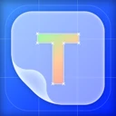
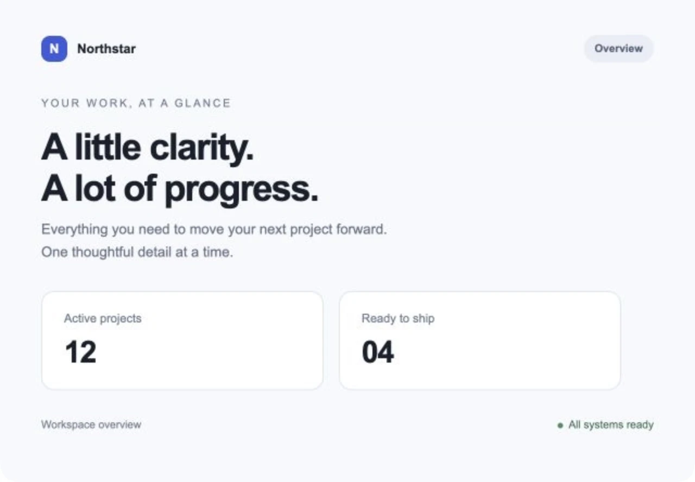
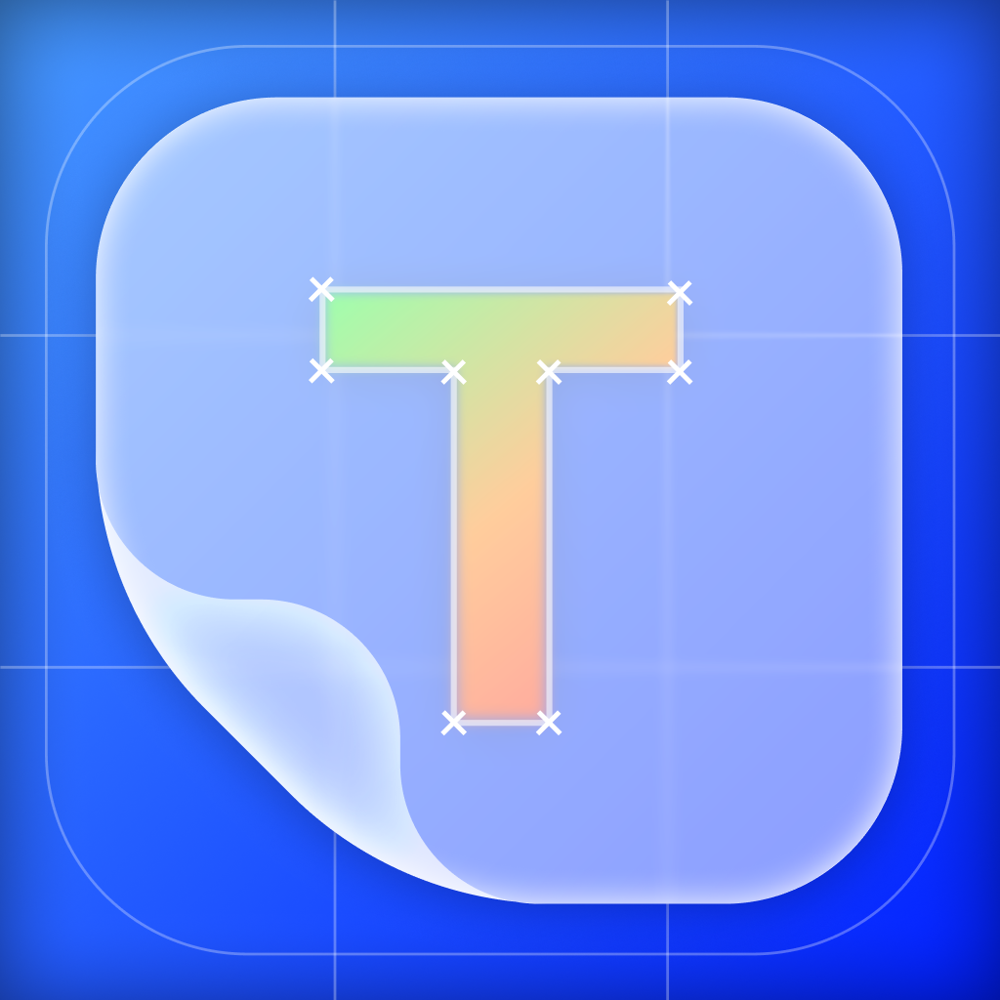

Trace PlaygroundDesign and code. Aligned.
Get Trace for Mac
A closer look.
A better match.
From design reference to a closer match, in three simple steps.
-
01
Capture or paste.
Press ⌘G to capture beneath Trace, or paste an image from your design tool with ⌘V.
-
02
Move into place.
Drag Trace over your app. Nudge with the arrow keys and return to the reference’s logical size with Actual Size.
-
03
See the differences.
Invert and blend at 50%. Matching content becomes neutral gray at 100% window opacity; displaced edges stand out.
Stop clicking.
Start flying.
Keyboard shortcuts that actually save you time.
Capture & edit
Compare & align
Tabs & workspace
Shortcuts work in Trace. You can add ⌘ to arrow-key movement in Preferences.
The Complete Keyboard Reference
Your screen.
Your Mac.
Screenshots stay on your Mac. No account required. Keep references in tabs, undo changes, or lock the overlay to click through to your app.
Images and undo history last for the current session. Preferences and window positions are saved for next time.
Read the Privacy PolicyBefore you start.
A few useful details before your first comparison.
Can I use Trace with Figma?
Copy a frame as an image and paste it into Trace, or capture a visible design. Trace uses screenshots and clipboard images, without a direct Figma connection.
How does opacity work?
Image translucence switches between 50% and fully opaque. Window opacity in Preferences adjusts the entire window. Use 50% image translucence and 100% window opacity for the default neutral-gray comparison.
Does Trace detect differences automatically?
Trace is a visual comparison tool. You inspect the overlay yourself; it does not generate difference scores or automated reports.
Is Trace free?
Yes. Trace is free on the Mac App Store and requires macOS 26 or later.
Can I compare more than one reference?
Yes. Keep multiple screenshots or pasted images in tabs, use the thumbnail sidebar to find them, or open another Trace window.
Can I click through the overlay?
Yes. Lock the overlay with Control–Command–L to interact with the app underneath. Activate Trace again to unlock it.
Are my screenshots saved between sessions?
Screenshots and undo history last for the current session. Copy an image out of Trace if you want to keep it. Preferences and window positions are saved between sessions.
Why does Trace need Screen Recording permission?
macOS requires Screen Recording permission to capture the area beneath Trace. You can also paste an image from the clipboard. Screenshots stay on your Mac; no account is required.

Trace
Download for macOSFree. Requires macOS 26 or later.